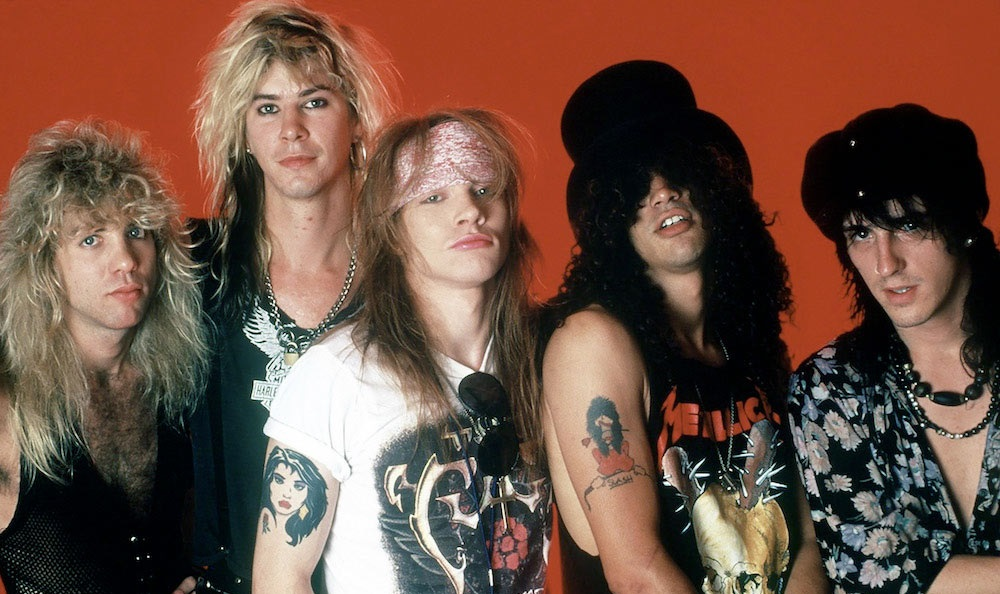
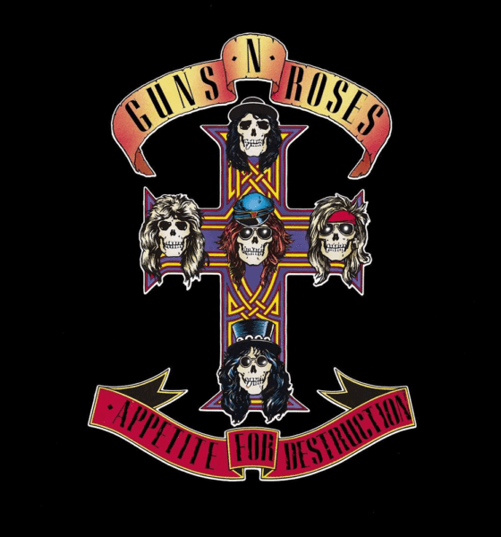

ORIGEN
La banda fue formada en marzo de 1985 por Axl Rose (voz, teclados), Tracii Guns (guitarra líder), Izzy Stradlin (guitarra rítmica, coros), Ole Beich (bajo) y Rob Gardner (batería). Los cinco miembros originales eran de dos grupos diferentes, L.A. Guns (que más tarde fue reformado) y Hollywood Rose. Posteriormente, los miembros decidieron combinar los nombres de los dos grupos anteriores y llamar a la banda Guns N' Roses. Desde Hollywood Rose llegaron Axl Rose (voz) e Izzy Stradlin (guitarra rítmica), mientras que de L.A. Guns llegaron Tracii Guns (guitarra solista), Ole Beich (bajo) y Rob Gardner (batería). Ole Beich, originalmente de L.A Guns, abandonó la formación pocos días después de la creación del grupo siendo reemplazado por Duff McKagan, quien debutaría con los demás en el primer show de la banda el 26 de marzo de 1985 en el Troubadour. Finalizado su séptimo espectáculo, el 12 de mayo en Joshua's Record, el guitarrista Tracii Guns fue expulsado de la banda debido a diferencias con Axl Rose, tras su salida refundo L.A Guns. Al día siguiente Rob Gardner decidió abandonar el grupo. En sus lugares llegaron Saul Hudson, más conocido como Slash y Steven Adler quienes tenían experiencia previa en varias bandas, además de tener buena relación con Axl e Izzy por haber formado parte de una alineación de Hollywood Rose solo unos meses atrás. Con esta formación (Axl, Slash, Izzy Stradlin, Duff y Adler) alcanzarian la fama mundial. Su debut se daría el 6 de junio en el Troubadour
>
Appetite for Destruction
El álbum Appetite for Destruction salió a la venta el 21 de julio de 1987. Vendió más de 27 millones de copias, tuvo tres canciones entre el Top 10 (Welcome to the Jungle, Sweet Child o' Mine y Paradise City), y alcanzó el número 1 en las listas. siendo el álbum debut más vendido de la historia.El nombre del disco salió de una postal que descubrieron en una tienda. La portada del mismo, en la que aparecía una joven sentada contra un muro, en evidente apariencia de haber sido recientemente violada junto a un robot con gabardina y un ser con múltiples colmillos sobrevolando la escena, fue censurada a las dos semanas de ponerse el vinilo a la venta siendo sustituida por la famosa cruz latina en la que aparecían las calaveras de los cinco componentes de la banda californiana. No obstante, la portada original se incluyó en el interior de la carpeta del álbum, junto con las letras, y en las páginas centrales del libreto en la edición en CD. El álbum aparece en el libro 1001 álbumes que debes escuchar antes de morir de Robert Dimery. Mientras que la revista Rolling Stone lo puso en el puesto 62 en su lista de "Los 500 mejores álbumes de todos los tiempos"
